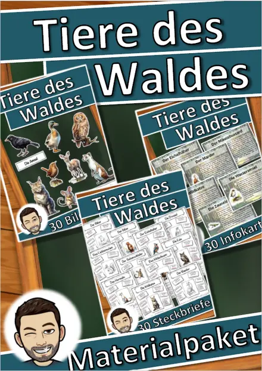

Hormone steuern die Pubertät – Unterrichtsreihe (Klasse 6)
Hormone steuern die Pubertät – Unterrichtsreihe (Klasse 6)Sechs Stunden zu den Botenstoffen des Körpers
Mit diesem Material (Unterrichtsreihe) bringe ich das Thema „Geschlechtsmerkmale/ -organe & Pubertät“ klar strukturiert in den Unterricht. Alles ist sofort einsetzbar: ausdrucken, kopieren, loslegen.
Lernziele:
- Ich kann erklären, was Hormone sind.
- Ich kann die Rolle der Hirnanhangsdrüse beschreiben.
- Ich kann Wirkungen der Geschlechtshormone nennen.
Differenziert dort, wo es sinnvoll ist: Die Aufgaben gibt es in genau drei Stufen (★ leicht, ★★ mittel, ★★★ schwer). Info-, Merk- und Begriffsseiten sind für alle gleich.
Enthalten (13 Seiten):
- Hinweise für die Lehrkraft
- Reihenplan
- Info
- Wichtige Begriffe
- Aufgaben ★
- Aufgaben ★★
- Aufgaben ★★★
- Selbsteinschätzung
- Begriffe-Training
- Lösungen
Die Seiten für die Lehrkraft (Hinweise, Lösungen) sind oben rechts mit einer roten Ecke markiert. Alle Texte sind eigens für dieses Material geschrieben und fachlich zweifach geprüft.
Viel Freude beim Einsatz wünscht Snice
FachBiologie
KlasseKl. 6
SchulformSek I Mittlere Schulform
MaterialartUnterrichtsreihen
Ähnliche Materialien

04-22 Internationaler Tag der Mutter Erde

03-21 Internationaler Tag der Wälder

03-03 Welttag der freilebenden Tiere und Pflanzen

02-10 Internationaler Tag des Arabischen Leoparden

02-02 Welttag der Feuchtgebiete

Materialpaket - Tiere des Waldes (Steckbriefe, Infokarten, Bildkarten) - Natur und Umwelt - Waldtiere

Tiere des Waldes - Bildkarten - Waldtiere - Natur und Umwelt